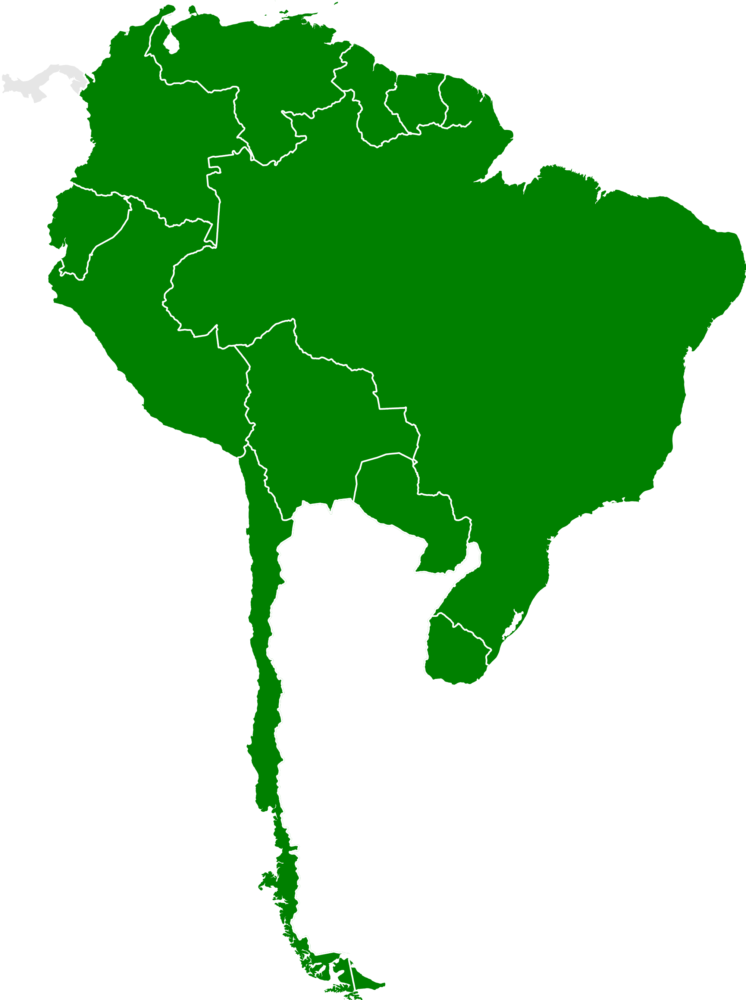
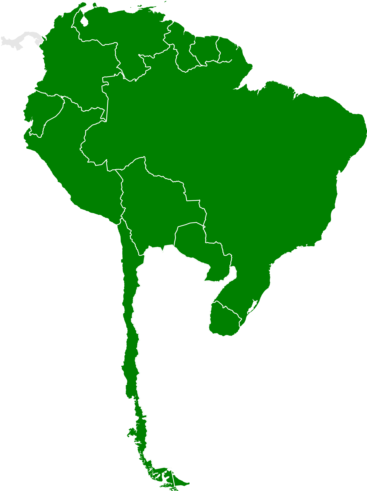
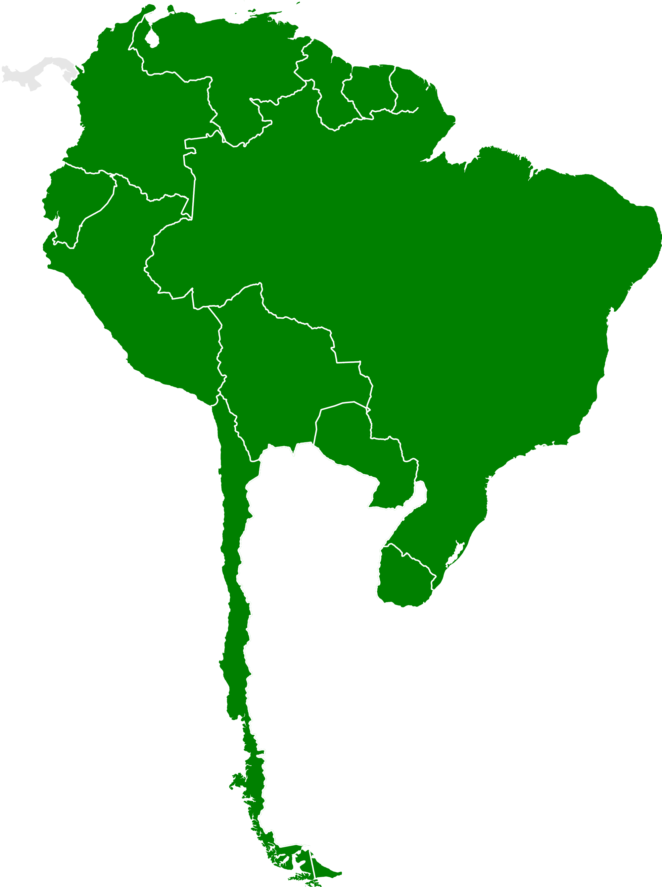
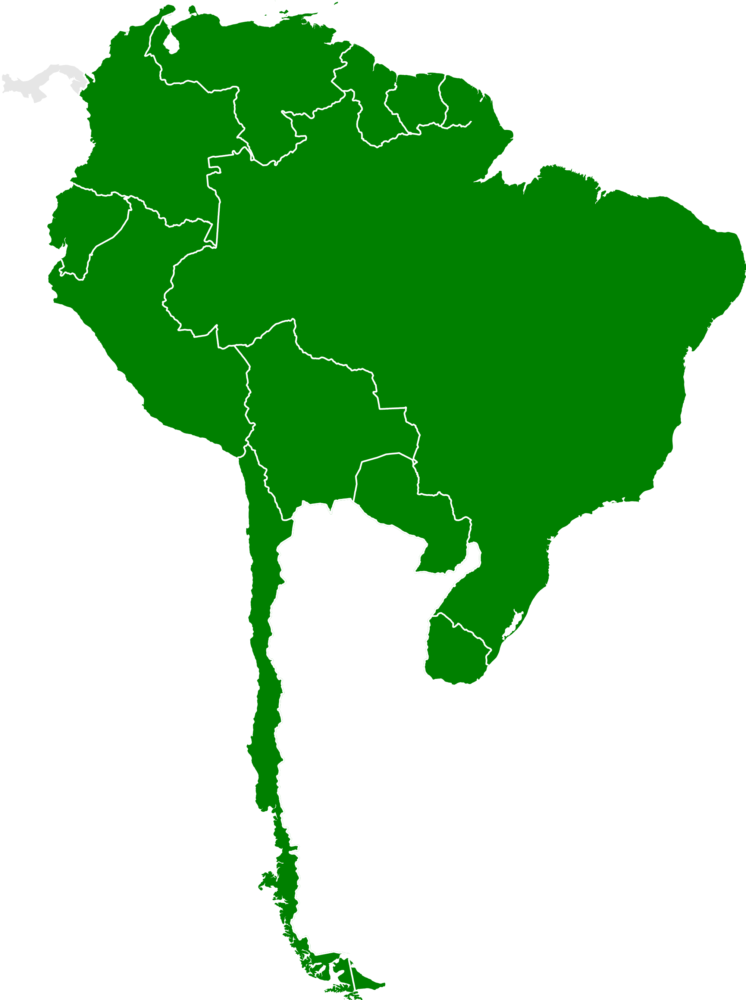

Presentation is Best Viewed in Full-Screen!
Use the navigation bar on the bottom right, or arrow keys to move forward and backwards in the presentation.
Argentina is the second largest country in South America with a population of 44 million. As per other Latin American nations, Argentina was initially under the Spanish Crown, with political leadership being centered in Buenos Aires. In 1816, under the influence of José de San Martín, declared independence, with the city being made the nation’s capital in 1862. Throughout history, many Argentinians have immigrated to America with reasons that mainly stem from instability back at home and a desire for better opportunities.
The content of this presentation, unless specified, was mainly crafted from combining and corroborating information from Julio Rodriguez’s article “Argentinian Americans” and Andres J. Consoli, as well as other Argentine immigrant’s article/chapter titled, “Argentines in the United States: Migration and Continuity”, published in the book, “Latinx Immigrants”, from 2018.
The authors of the Argentines in the United States offered their own personal accounts of immigration (shown later in the presentation). This includes Andres and Eduardo, both of whom are psychologists, Mercedes, a social worker, and Agustina, another psychologist. Many Argentinians who migrated to America were considered intellectuals and/or refugees from a tumultuous country.
An article by Mohamad Moslimani and other researchers from the Pew Research Center found that around 290,000 Hispanics of Argentine origin lived in the US in 2021. 160,000 of Argentine Americans were foreign born, originally birthed outside of the US (likely Argentina), while the other 90,000 were born within America.
Argentine culture is a multi-faceted area. The people enjoy constructing close interpersonal relationships, and tend to be a very open and family centered. Youth tend to spend a longer time living with their parents than even Argentinian-American youth in the US. Family structure is patriarchal, however recent events have led more women to be in typically male-dominated careers. Argentina is recognized as being the Latin American country with the least gender equality, having elected one female president, and two female vice-presidents throughout its history. In 2010, Argentina became the first Latin American country to legalize same-sex marriage.
Mental health is considerably less stigmatized in Argentina compared to the US. Going to therapy, even for many years, is considered the norm, and people often share their experiences with mental counseling. The nation seems to have a vested interest in the field of psychotherapy and specifically psychoanalysis. For comparison, A 2005 study by Kohn et al. that found Argentina had 106 psychologists per 100,000 people, compared to the US’ ratio of 31.1 per 100,000 (of the time)*. The “Universidad de Buenos Aires” a public university in Argentina’s capital, trains the highest number of psychologists in the country.
Argentine citizens have immigrated to the US for a long time, though before 1970, those who immigrated were labeled by the American government as part of “other Hispanics”. Sources suggest that the population of Argentine-origin in the US has experienced most of its growth and size from the past three decades. According to A. J. Consoli et al., about 80% of the aforementioned population in the US report living there for at least 11 years, with half of that section saying they have lived there for more than 20 years. Moslimani et al.’s research is more current however, having data updated to 2021, about 3 years after Latinx Immigrants publishing in 2018. The Pew Researchers found that the Argentine-origin population had increased by 169% since 2000 (110,000 to 290,000). The article also found that 53% of foreign-born Argentines have lived in the US for more than 20 years.


The Pew Research Center article found that in general, most Argentine American’s are concentrated in Florida, California, New York, Texas, and New Jersey.


Accounts may differ in regards to why a person, or even a group/generation of Argentine immigrants would emigrate from their home country. Major reasons for spikes in emigration would be to seek better financial opportunity, and to escape the economic and political struggles, which have been a historical recurrence in Argentina.
For instance, Argentina’s unstable economy and string of dictatorships in the 1950s created significant native emigration. These troubles stemmed from the economy becoming reliant on the prices of commodities in the 1900s, and from there, political instability started to shape in the 30s. An estimated 385,000 highly-skilled Argentinians left between the 60s-80s to other countries including the US. Rodriguez claims it was for greater economic opportunities for immigrants in the 60s, and to escape the “dirty war”. This period from the 70s and early 80s was a period of mass imprisonment, torture, and murder to opposition. Despite this, A. J. Consoli et al. Points to how many citizens were not seeking asylum in the US as much due to the government at the time supporting the dictatorship at home.
An economic and financial downturn in the country in 2001 & 2014 saw another 255,000 Argentinians emigrate to various nations. Many, like A. J. Consoli et al., migrate between the Argentina and America to be closer to family, as well as seek a better quality of life and opportunities.
.jpg)
Consoli, Andrés J, Eduardo Bunge, Mercedes Fernández Oromendia, and Agustina Bertone. 2018. “Argentines in the United States: Migration and Continuity.” In Latinx Immigrants, edited by Patricia Arredondo, 15–32. International and Cultural Psychology. Switzerland: Springer International Publishing AG. https://doi.org/10.1007/978-3-319-95738-8_2.
Kohn, Robert, et al. “Mental disorders in Latin America and the Caribbean: a public health priority.” Revista panamericana de salud pública, vol. 18, no. 4–5, 2005, pp. 229–40, https://doi.org/10.1590/S1020-49892005000900002.
Moslimani, Mohamad, Luis Noe-Bustamante, and Sono Shah. 2023. “Facts on Hispanics of Argentine Origin in the United States, 2021.” Pew Research Center’s Hispanic Trends Project (blog). August 16, 2023. https://www.pewresearch.org/hispanic/fact-sheet/us-hispanics-facts-on-argentine-origin-latinos/.
Rodiguez, Julio. n.d. “Argentinean Americans.” Accessed March 10, 2024. https://www.everyculture.com/multi/A-Br/Argentinean-Americans.html.
Adobe Communications Team. 2018. “5 Ws (and 1 H) To Be Asked of Every Project | Adobe Workfront.” Adobe Experience Cloud Blog. May 7, 2018. https://business.adobe.com/blog/basics/project-management-101-the-5-ws-and-1-h-that-should-be-asked-of-every-project.
.jpg#/media/File:Jorge_Rafael_Videla_(2).jpg){kind=link}